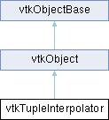

|
Etrek
|
|
Etrek
|
interpolate a tuple of arbitrary size More...
#include <vtkTupleInterpolator.h>

Public Types | |
| enum | { INTERPOLATION_TYPE_LINEAR = 0 , INTERPOLATION_TYPE_SPLINE } |
Public Member Functions | |
| vtkTypeMacro (vtkTupleInterpolator, vtkObject) | |
| void | PrintSelf (ostream &os, vtkIndent indent) override |
| int | GetNumberOfTuples () |
| void | Initialize () |
| void | FillFromData (int nb, double *t, double **data, bool isSOADataArray=false) |
| void | AddTuple (double t, double tuple[]) |
| void | RemoveTuple (double t) |
| void | InterpolateTuple (double t, double tuple[]) |
| void | SetNumberOfComponents (int numComp) |
| vtkGetMacro (NumberOfComponents, int) | |
| double | GetMinimumT () |
| double | GetMaximumT () |
| void | SetInterpolationType (int type) |
| vtkGetMacro (InterpolationType, int) | |
| void | SetInterpolationTypeToLinear () |
| void | SetInterpolationTypeToSpline () |
| void | SetInterpolatingSpline (vtkSpline *) |
| vtkGetObjectMacro (InterpolatingSpline, vtkSpline) | |
| Public Member Functions inherited from vtkObject | |
| vtkBaseTypeMacro (vtkObject, vtkObjectBase) | |
| virtual void | DebugOn () |
| virtual void | DebugOff () |
| bool | GetDebug () |
| void | SetDebug (bool debugFlag) |
| virtual void | Modified () |
| virtual vtkMTimeType | GetMTime () |
| void | RemoveObserver (unsigned long tag) |
| void | RemoveObservers (unsigned long event) |
| void | RemoveObservers (const char *event) |
| void | RemoveAllObservers () |
| vtkTypeBool | HasObserver (unsigned long event) |
| vtkTypeBool | HasObserver (const char *event) |
| vtkTypeBool | InvokeEvent (unsigned long event) |
| vtkTypeBool | InvokeEvent (const char *event) |
| std::string | GetObjectDescription () const override |
| unsigned long | AddObserver (unsigned long event, vtkCommand *, float priority=0.0f) |
| unsigned long | AddObserver (const char *event, vtkCommand *, float priority=0.0f) |
| vtkCommand * | GetCommand (unsigned long tag) |
| void | RemoveObserver (vtkCommand *) |
| void | RemoveObservers (unsigned long event, vtkCommand *) |
| void | RemoveObservers (const char *event, vtkCommand *) |
| vtkTypeBool | HasObserver (unsigned long event, vtkCommand *) |
| vtkTypeBool | HasObserver (const char *event, vtkCommand *) |
| template<class U, class T> | |
| unsigned long | AddObserver (unsigned long event, U observer, void(T::*callback)(), float priority=0.0f) |
| template<class U, class T> | |
| unsigned long | AddObserver (unsigned long event, U observer, void(T::*callback)(vtkObject *, unsigned long, void *), float priority=0.0f) |
| template<class U, class T> | |
| unsigned long | AddObserver (unsigned long event, U observer, bool(T::*callback)(vtkObject *, unsigned long, void *), float priority=0.0f) |
| vtkTypeBool | InvokeEvent (unsigned long event, void *callData) |
| vtkTypeBool | InvokeEvent (const char *event, void *callData) |
| virtual void | SetObjectName (const std::string &objectName) |
| virtual std::string | GetObjectName () const |
| Public Member Functions inherited from vtkObjectBase | |
| const char * | GetClassName () const |
| virtual vtkTypeBool | IsA (const char *name) |
| virtual vtkIdType | GetNumberOfGenerationsFromBase (const char *name) |
| virtual void | Delete () |
| virtual void | FastDelete () |
| void | InitializeObjectBase () |
| void | Print (ostream &os) |
| void | Register (vtkObjectBase *o) |
| virtual void | UnRegister (vtkObjectBase *o) |
| int | GetReferenceCount () |
| void | SetReferenceCount (int) |
| bool | GetIsInMemkind () const |
| virtual void | PrintHeader (ostream &os, vtkIndent indent) |
| virtual void | PrintTrailer (ostream &os, vtkIndent indent) |
| virtual bool | UsesGarbageCollector () const |
Static Public Member Functions | |
| static vtkTupleInterpolator * | New () |
| Static Public Member Functions inherited from vtkObject | |
| static vtkObject * | New () |
| static void | BreakOnError () |
| static void | SetGlobalWarningDisplay (vtkTypeBool val) |
| static void | GlobalWarningDisplayOn () |
| static void | GlobalWarningDisplayOff () |
| static vtkTypeBool | GetGlobalWarningDisplay () |
| Static Public Member Functions inherited from vtkObjectBase | |
| static vtkTypeBool | IsTypeOf (const char *name) |
| static vtkIdType | GetNumberOfGenerationsFromBaseType (const char *name) |
| static vtkObjectBase * | New () |
| static void | SetMemkindDirectory (const char *directoryname) |
| static bool | GetUsingMemkind () |
Protected Member Functions | |
| void | InitializeInterpolation () |
| Protected Member Functions inherited from vtkObject | |
| void | RegisterInternal (vtkObjectBase *, vtkTypeBool check) override |
| void | UnRegisterInternal (vtkObjectBase *, vtkTypeBool check) override |
| void | InternalGrabFocus (vtkCommand *mouseEvents, vtkCommand *keypressEvents=nullptr) |
| void | InternalReleaseFocus () |
| Protected Member Functions inherited from vtkObjectBase | |
| virtual void | ReportReferences (vtkGarbageCollector *) |
| vtkObjectBase (const vtkObjectBase &) | |
| void | operator= (const vtkObjectBase &) |
Protected Attributes | |
| int | NumberOfComponents |
| int | InterpolationType |
| vtkSpline * | InterpolatingSpline |
| vtkPiecewiseFunction ** | Linear |
| vtkSpline ** | Spline |
| Protected Attributes inherited from vtkObject | |
| bool | Debug |
| vtkTimeStamp | MTime |
| vtkSubjectHelper * | SubjectHelper |
| std::string | ObjectName |
| Protected Attributes inherited from vtkObjectBase | |
| std::atomic< int32_t > | ReferenceCount |
| vtkWeakPointerBase ** | WeakPointers |
Additional Inherited Members | |
| Static Protected Member Functions inherited from vtkObjectBase | |
| static vtkMallocingFunction | GetCurrentMallocFunction () |
| static vtkReallocingFunction | GetCurrentReallocFunction () |
| static vtkFreeingFunction | GetCurrentFreeFunction () |
| static vtkFreeingFunction | GetAlternateFreeFunction () |
interpolate a tuple of arbitrary size
This class is used to interpolate a tuple which may have an arbitrary number of components (but at least one component). The interpolation may be linear in form, or via a subclasses of vtkSpline.
To use this class, begin by specifying the number of components of the tuple and the interpolation function to use. Then specify at least one pair of (t,tuple) with the AddTuple() method. Next interpolate the tuples with the InterpolateTuple(t,tuple) method, where "t" must be in the range of (t_min,t_max) parameter values specified by the AddTuple() method (if not then t is clamped), and tuple[] is filled in by the method (make sure that tuple [] is long enough to hold the interpolated data).
You can control the type of interpolation to use. By default, the interpolation is based on a Kochanek spline. However, other types of splines can be specified. You can also set the interpolation method to linear, in which case the specified spline has no effect on the interpolation.
| anonymous enum |
Enums to control the type of interpolation to use.
| void vtkTupleInterpolator::AddTuple | ( | double | t, |
| double | tuple[] ) |
Add another tuple to the list of tuples to be interpolated. Note that using the same time t value more than once replaces the previous tuple value at t. At least two tuples must be added to define an interpolation function.
| void vtkTupleInterpolator::FillFromData | ( | int | nb, |
| double * | t, | ||
| double ** | data, | ||
| bool | isSOADataArray = false ) |
Add all the tuples to the list of tuples in one time, and then sort them only once. Much faster than using AddTuple for each tuple. t is the time values array, nb is the size of time values array, data is the array containing tuples to add (by default AOS ordering)
| double vtkTupleInterpolator::GetMinimumT | ( | ) |
Obtain some information about the interpolation range. The numbers returned (corresponding to parameter t, usually thought of as time) are undefined if the list of transforms is empty. This is a convenience method for interpolation.
| int vtkTupleInterpolator::GetNumberOfTuples | ( | ) |
Return the number of tuples in the list of tuples to be interpolated.
| void vtkTupleInterpolator::Initialize | ( | ) |
Reset the class so that it contains no (t,tuple) information.
| void vtkTupleInterpolator::InterpolateTuple | ( | double | t, |
| double | tuple[] ) |
Interpolate the list of tuples and determine a new tuple (i.e., fill in the tuple provided). If t is outside the range of (min,max) values, then t is clamped. Note that each component of tuple[] is interpolated independently.
|
static |
Instantiate the class.
|
overridevirtual |
| void vtkTupleInterpolator::RemoveTuple | ( | double | t | ) |
Delete the tuple at a particular parameter t. If there is no tuple defined at t, then the method does nothing.
| void vtkTupleInterpolator::SetInterpolatingSpline | ( | vtkSpline * | ) |
If the InterpolationType is set to spline, then this method applies. By default Kochanek interpolation is used, but you can specify any instance of vtkSpline to use. Note that the actual interpolating splines are created by invoking NewInstance() followed by DeepCopy() on the interpolating spline specified here, for each tuple component to interpolate.
| void vtkTupleInterpolator::SetInterpolationType | ( | int | type | ) |
Specify which type of function to use for interpolation. By default spline interpolation (SetInterpolationTypeToSpline()) is used (i.e., a Kochanek spline) and the InterpolatingSpline instance variable is used to birth the actual interpolation splines via a combination of NewInstance() and DeepCopy(). You may also choose to use linear interpolation by invoking SetInterpolationTypeToLinear(). Note that changing the type of interpolation causes previously inserted data to be discarded.
| void vtkTupleInterpolator::SetNumberOfComponents | ( | int | numComp | ) |
Specify the number of tuple components to interpolate. Note that setting this value discards any previously inserted data.